¡Bienvenido a tu perfil !
Para tener un mayor alcance de tu perfil no olvides actualizarlo continuamente.

Sobre mi...
Soy Pablo Martínez, un diseñador web con 6 años de experiencia en la creación de identidad para empresas. Me destaco por mi liderazgo y organización, y estoy comprometido con mi empresa para ayudar a nuestros clientes a conseguir su identidad visual. Actualmente, busco mantenerme al día en cuanto a tendencias digitales para que pueda contribuir con mi experiencia y habilidades dentro de iStrategy.
Vista General
Vista General